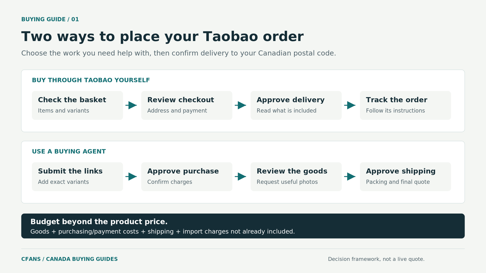

To buy from Taobao in Canada, first check whether your selected items can be purchased and delivered through the options available in your Taobao account. Use a buying agent when you need help placing the order, checking the goods or arranging a shipment that the available checkout does not cover. Taobao's official app listing now includes Canada among the regions with an English interface, so a language barrier is no longer an automatic reason to use an agent.[1]
The practical decision is what you need help with. A straightforward purchase may be manageable yourself. An order involving several sellers, uncertain product options or specific inspection requests may benefit from assistance.
This guide explains both approaches, including how to prepare a purchase through CFans without confusing the product payment with the cost of getting everything to your Canadian address.
Published by CFans. Service information and Canadian import guidance reviewed on October 28, 2026. This guide covers personal shopping, not commercial importing for resale. Available checkout options and service terms must be checked for the actual order.
First, choose your purchasing route

| Route | Who places the Taobao order? | When it makes sense |
|---|---|---|
| Buy through Taobao yourself | You manage the product selection, payment and order. | Your checkout offers an acceptable delivery option and you do not need extra purchasing assistance. |
| Use a buying agent such as CFans | The agent purchases against your instructions. | You need assistance with the purchase, warehouse photographs or combining selected orders before shipping. |
CFans documents purchasing, warehouse photo checks, packaging selection and international dispatch as stages of its service.[2] These are reasons to consider it, not proof that an agent is necessary for every Canadian shopper.
Where Taobao offers a warehouse-based consolidation option, read its instructions separately from direct delivery. In particular, establish whether you will need to select parcels and pay an international shipping charge later. Do not send goods to a warehouse address copied from an old tutorial.
Choose a purchasing route that accepts your actual items and Canadian address. Diagram is a decision aid, not a screenshot of a live checkout.
Step 1: Set up your account, language and Canadian address
Install or update the official Taobao app and create or sign in to your account. Complete the verification it requests using your own contact details. In the app's region and language settings, look for Canada and English; the official listing confirms English availability for Canada, but this does not establish delivery eligibility for every listing.[1]
Enter the recipient's full name, street and apartment or unit number, city, province, postal code and reachable telephone number. Keep the delivery address accurate even when you change the display language or currency.
Do not select a different country just to obtain a delivery option. The useful checkout is the one that accepts the address where the parcel must actually arrive.
For an agent-assisted order, prepare these same destination details for your agent. Use only the receiving instructions supplied for your own account and order.
Step 2: Choose the exact product, not just a similar-looking photo
Before adding an item to your basket, save the product link and record the selected colour, size, model, quantity and included accessories.
Read the seller's measurements rather than choosing a clothing size solely because you usually wear that letter size in Canada. For a bag or household item, check the dimensions. For an electronic accessory, identify the exact compatible model and any specifications that determine whether it will work for you.
Compare listing details with recent buyer photographs and reviews. Use discrepancies as questions to resolve, rather than assuming that a high sales count answers every concern.
A useful order instruction identifies what must arrive. For example:
One navy tote bag in the medium size, with the shoulder strap shown in the selected option. Do not substitute another colour or size without asking me.
For a gift or collectible, state whether the original packaging must be preserved. For anything with batteries, liquids or other unusual characteristics, establish shipping eligibility before purchasing; do not assume that permission to buy an item also confirms permission to transport it.
Step 3: Test the available Taobao checkout before choosing an agent
Select your Canadian address and review the delivery and payment choices shown for the actual basket. Check whether the displayed payment includes international transport, whether another shipping payment follows, and what return arrangements apply.
Taobao advertises cross-border delivery and card or local-wallet payment options in selected regions. It does not promise that every Canadian card, product or account qualifies for the same checkout.[1]
If an eligible delivery option meets your needs and you can complete the purchase confidently, use it. An agent is not automatically a better choice simply because the destination is Canada.
If checkout fails, identify the missing requirement: account verification, payment acceptance, an unavailable destination or a product restriction. Contact the relevant platform or payment provider where necessary. A buying service may solve a purchasing problem, but it cannot make a prohibited shipment permissible.
Step 4: Prepare an agent-assisted order through CFans
When you need purchasing help, submit the Taobao product links to CFans together with the exact variants, quantities and Canadian destination. Request confirmation of product acceptance, applicable charges and any additional checks before funding the purchase.
CFans's published workflow separates buying the goods from warehouse review and subsequent packaging and shipping payment.[3]
For a mixed order, keep one short record per item. A jacket from one seller and two accessories from another should not become a single instruction saying only “buy these.” Identify the choice for each listing and any condition that should stop the purchase.
A useful enquiry is:
Please confirm whether these Taobao items can be purchased and shipped to my Canadian postal code. I need the listed sizes and colours, with no substitutions. Before international dispatch, I would like photographs of the size labels and the included accessories. Please identify the purchase charges, any extra checking costs and the shipping costs that remain estimates.
Resolve important questions before payment. Do not fund a large basket just to discover whether the required service is available.
Step 5: Pay for the purchase while keeping a separate delivery budget
Record what the first payment covers. Do not assume that paying for the products means international delivery has also been paid.
For your budget, use:
Total delivered cost = goods + delivery within China + purchasing and payment costs + requested warehouse services + international shipping + import and clearance charges not already included.
Not every service charges each component separately. The point is to identify what is included, excluded or still unknown.
For example, suppose an invented basket costs C$120 for goods, C$8 for domestic delivery, C$12 for purchasing and payment costs, and C$55 for international shipping. The subtotal is C$195 before any additional services or import charges. These figures illustrate the calculation; they are not CFans prices or a Canada shipping estimate.
Compare the amount actually charged to your Canadian payment account. If conversion is already included in that debit, do not add a second estimated currency-conversion cost.
Keep the purchase receipt and the confirmed specifications together. They will be useful when reviewing the goods and explaining the contents of the shipment.
Step 6: Review warehouse photos before approving shipment
For a CFans order, use the warehouse photographs to compare the received goods with your saved specifications.[2] Check the item, selected variant, visible condition and any accessories that can actually be seen.
Make requests specific. “Show the size label and the bag strap” is more useful than “check everything.” Where fit matters, ask whether a measurement service is available and what it costs. A photograph of a size label is not a measurement.
If something looks wrong, pause the shipment and ask about the seller's return or exchange conditions, deadline and domestic return cost. Do not wait for every other item in a mixed basket before raising an obvious mismatch.
Treat photographs as evidence of visible details, not an automatic authenticity check, functional test or guarantee of durability.
Step 7: Approve the packing and shipping option for your postal code
Specify what packaging can be removed and what must stay. You might remove unnecessary outer cartons from soft goods while retaining protection for a fragile accessory.
Request the final packed weight and dimensions. DHL Express, for example, compares actual and volumetric weight and uses the higher figure; its published volumetric formula uses dimensions in centimetres divided by 5,000. Other services may use different charging rules.[8]
This means a quoted item weight alone is not enough to approve freight. Ask which weight is being billed and whether packing changes affect it.
For your Canadian address, establish the delivery service, available tracking, any postcode-specific charges and who is expected to perform final delivery. Do not assume a familiar carrier name covers the entire journey.
For a deadline, ask when the transit estimate starts. Plan separately for seller dispatch, warehouse receipt, checking, packing, international transport and clearance. A carrier transit estimate is not a promise measured from the day you bought the goods.
Step 8: Understand Canadian import charges before dispatch
For most eligible purchases sent directly from China, Canada's low-value duty-and-tax relief threshold is C$20, not C$150. Exceptions apply. Above the applicable threshold, taxes and any relevant duty must be considered; the exact assessment depends on the goods and the import arrangements.[4]
GST/HST and applicable provincial tax are distinct from customs duty. For postal imports above C$20, CBSA explains that applicable charges are assessed on the full value, not just the amount exceeding C$20.[5]
Do not mark an ordinary purchase as a gift to claim the separate gift allowance. CBSA's gift rules require a qualifying personal gift; items sent by a business do not qualify for that exemption.[5]
Canada Post currently lists a C$9.95 handling fee per taxable or dutiable mail item. That is a postal handling charge, not a universal fee applied by every courier or to every parcel.[6]
Private courier clearance or brokerage fees are separate from government duty and taxes. Ask the selected courier what it charges and whether the shipping quote already includes the relevant amount.[7]
For any quote described as “tax included,” ask which taxes and clearance charges are covered and who handles additional assessments. Keep values and product descriptions accurate regardless of the chosen route.
Step 9: Track delivery and keep the evidence you may need
Save the international tracking number and any later Canadian delivery number. Check payment requests through the carrier's official tracking channel rather than relying solely on an unsolicited message.
For an eligible Canada Post parcel assessed for duty and taxes, its official tracking service may offer an online payment option before delivery.[17]
When the parcel arrives, compare the contents with the order record. If there is damage or a shortage, retain the packaging, label, photographs and relevant correspondence, and report it within the applicable claim period.
A completed first order should leave you with a useful record: the goods received, the services performed and the total amount paid in Canadian dollars. Use that record when deciding whether to repeat the purchase.
Frequently asked questions
Can I buy from Taobao in Canada without a Chinese bank account?
Do not assume that a Chinese bank account is mandatory. Review the payment methods offered for your account and order; Taobao documents card and local-wallet support in selected regions. If the available payment route does not work for you, compare an agent's accepted payment methods and complete charges.[1]
Why am I asked to pay again after my items reach a warehouse?
Check the order's payment structure. In CFans's published process, packaging selection and shipping payment follow warehouse inspection. A first payment for purchasing therefore does not establish that international delivery is already included.[3]
Can I combine purchases from different Taobao stores?
CFans advertises parcel consolidation.[2] Ask which of your items can travel together and compare the resulting shipment. Combining parcels should be a packing and cost decision, not an assumption that one box is always cheaper.
Is an agent worthwhile for one inexpensive item?
Only if the complete cost and additional service make sense. Compare an eligible Taobao checkout with the agent's product payment, minimum charges, shipping and possible arrival costs. One low-priced item can still be an expensive international purchase.
Start with the order you actually need
Check your direct checkout first. When you need purchasing assistance or a defined warehouse review, prepare the product links, variants and destination for an agent-assisted order.
For a CFans purchase, send your shopping list and Canadian postal code, specify what you need checked, and review the purchase and delivery costs before committing. The goal is not merely to place an order; it is to receive the correct goods at a total cost you understand.
Sources and verification
Public sources reviewed October 28, 2026. Provider documentation describes the stated service, not independently observed performance.
- [1] Taobao official Canadian app listing
- [2] CFANS service description on Google Play
- [3] CFANS service description on the App Store
- [4] CBSA: Low-value shipment thresholds
- [5] CBSA: Determining duty and taxes owed
- [6] Canada Post: Customs duty, taxes and exemptions
- [7] CBSA: Importing casual goods by courier
- [8] DHL Express: Calculating volumetric weight
- [17] Canada Post: Paying duty and taxes
Last updated: October 2026 · CFans — cfans.com · All guides